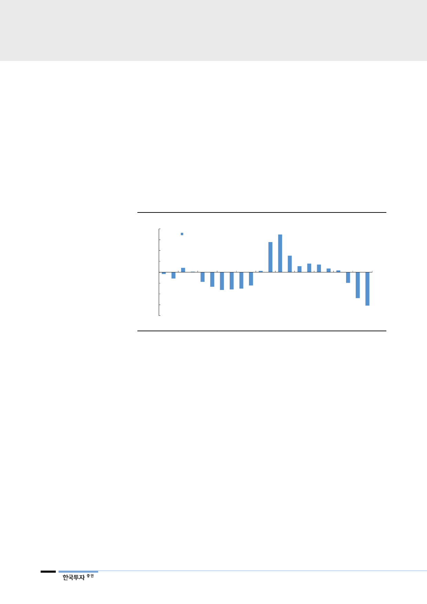

디램가격 고점 대비 44%
하락으로 구매자들의 구매력
회복
가파른 가격하락으로 수요 회복도 빨라진다
디램가격(PC디램 고정가격 기준)은 지난 2018년 10월 고점 대비 지난 3월말까
지 44% 하락했다. 2분기에도 20% 추가 하락할 경우 누적으로 8개월간 55% 하
락하는 셈이다. 지난 2015~2016년 하락사이클 기간 PC디램 고정가격은 고점
대비 59% 하락했다. 가격하락 기간은 19개월이었다. 이번 2분기에 PC디램가격
이 20% 하락할 경우 지난 하락사이클 대비 훨씬 짧은 기간에 비슷한 가격이 하
락하는 셈이다. 짧지만 가파르게 가격이 하락하면서 디램 구매자들의 구매력이
회복하는데 필요한 시간도 짧아질 것이다. 2019년 하반기~2020년 디램가격 하
락에 따른 수요회복은 점진적으로 나타날 것이다.
[그림 14] PC디램 고정가격 기준 변화율 추이
(% QoQ)
40
30
PC디램 모듈 고정가 변화율
20
10
0
(10)
(20)
(30)
(40)
1Q14 3Q14 1Q15 3Q15 1Q16 3Q16 1Q17 3Q17 1Q18 3Q18 1Q19
자료: TrendForce, 한국투자증권
모바일디램 수요 2019년
21%, 2020년 30% 증가
디램가격 하락에 따라 모바일디램 수요가 점차 회복할 것이다. 2018년 모바일디
램 수요는 5% 증가에 그쳤다. 채용량은 13% 증가했지만 스마트폰 수요가 6%
감소하면서 전체 모바일디램 수요는 5% 증가에 그쳤다. 가격이 하락하면서 채용
량이 점차 회복할 전망이다. 스마트폰 평균가격 대비 디램의 원가비중은 지난
2018년 2분기 22%로 가장 높았고 1분기에는 20%까지 낮아졌다. 2분기에는 가
격하락으로 디램 원가비중이 18%까지 낮아져 2017년 3분기 수준까지 낮아질
전망이다. 원가비중이 낮아지면서 스마트폰 업체의 채용량 증가로 인한 원가부담
도 낮아져 2020년 5G 모델 출시로 인한 채용량 증가도 기대할 수 있을 것이다.
모바일디램 수요는 2019년 21%, 2020년 30% 증가할 전망이다.
2020년 5G 모델 출시로
인한 교체수요 증가로
채용량 증가율 회복
전세계 통신사업자들의 5G망 설비투자가 2018년 시작돼 2022년까지 연평균
98%씩 투자규모가 증가할 전망이다. 같은 기간 5G 스마트폰의 출시와 판매도
증가해 2019년 9백만대에서 2020년 65백만대로 570% 증가할 전망이다(가트
너 추정치). 통신기술의 변화가 반드시 디램 채용량의 증가로 이어진다고 보기는
어렵지만 5G 통신기술에 기반한 새로운 application과 하드웨어 업그레이든 더
많은 디램을 필요로 할 것이다. 디램가격이 본격적으로 하락하기 시작한 2019년
보다는 충분히 하락한 2020년 5G 스마트폰 모델 출시와 더불어 디램 채용량은
더 크게 증가할 것이다.
8